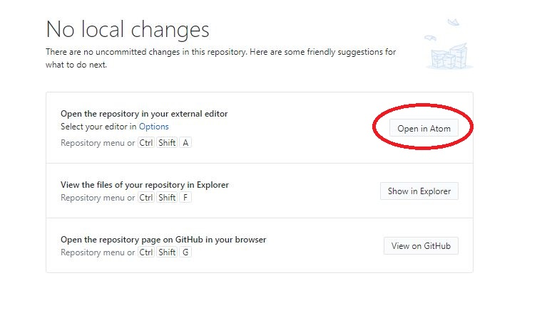
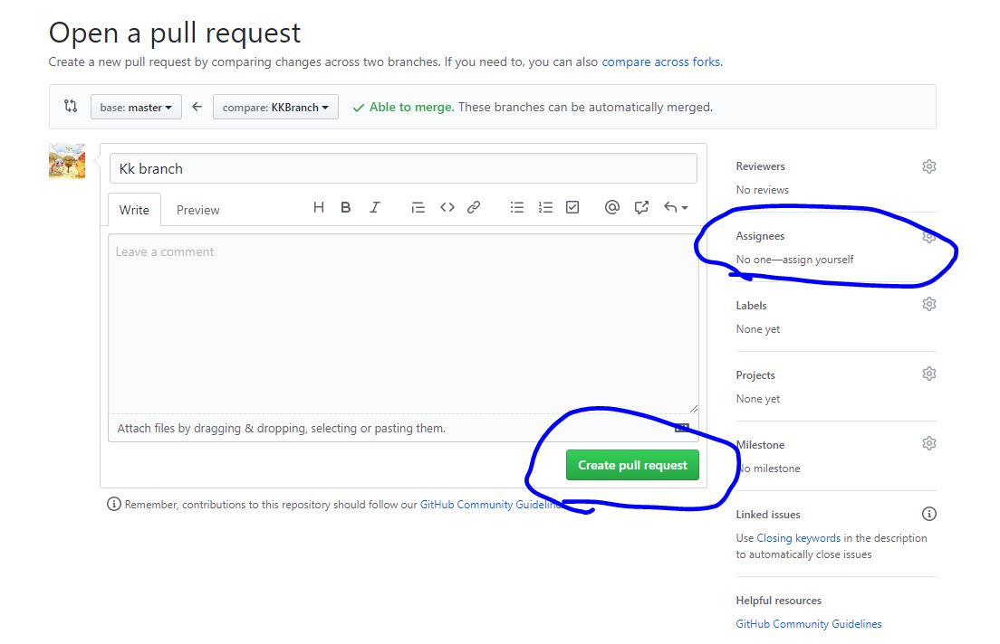
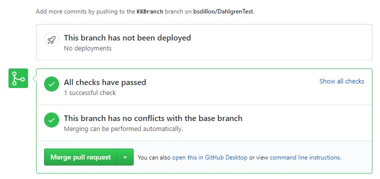

Creating and Handling Pull Requests
Make sure you have GitHub desktop downloaded and cloned the repository. If you don't, go to this link.
- Click on Current Branch dropdown and select "New Branch".
- After you name it, make changes to a file by opneing your repository in a different application. Here I used Atom.

- After you make changes, click on Commit to your branch in the bottom left of the desktop interface.
- Click on "Publish branch" to upload it to the GitHub site.
- Assign yourself to review this pull request, add a description, and click on Create pull request.

- Make sure the branch is passing the GitHub's validation checks, and if it doesn't, go back to step 3.

- Click on merge request, and the changes you make will be merged to the master branch.